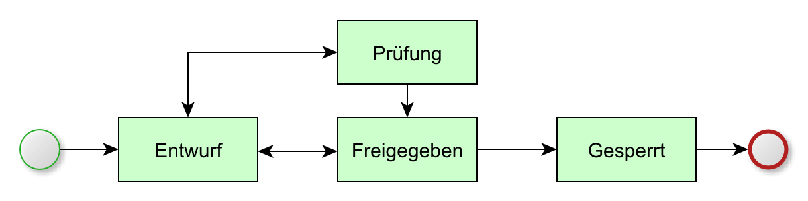

Statusnetz¶
Ein Produkt kann verschiedene Status annehmen. Der Status eines Produkts gibt Auskunft darüber, in welchem Bearbeitungszustand sich das Produkt aktuell befindet. Zudem ist für jeden Status vorgegeben, welcher Folgestatus gewählt werden kann. Das Statusnetz eines Produkts sieht die folgenden Status vor:
- Entwurf
- Wenn ein Produkt neu angelegt wird, weist ihm das System den Status Entwurf zu. Nur Produkte, die sich im Status Entwurf befinden, dürfen geändert werden. Der Produktstatus wird auch von anderen Elementen des virtuellen Produktmodells ausgewertet. So sind beispielweise die Objekte des Variantenmanagements nur solange editierbar, wie sich das Produkt im Status Entwurf befindet.
- Prüfung
- Das Produkt wird dahingehend geprüft, ob es vollständig erfasst ist (dann erhält es den Status Freigegeben) oder ob noch Detailinformatinen fehlen (dann wird es wieder auf den Status Entwurf zurürckgesetzt).
- Freigegeben
- Ein Produkt im Status Freigegeben ist vollständig erfasst.
- Gesperrt
- Der Status eines Produkts kann aus mehreren Gründen auf Gesperrt gesetzt werden. Ein Grund kann sein, dass die Weiterentwicklung des Produkts eingestellt wurde.
Statusübergänge¶
Die nachfolgende Grafik zeigt alle im System definierten Status sowie die jeweils vom System vorgegebenen Statusübergänge.

Statusnetz eines Produkts